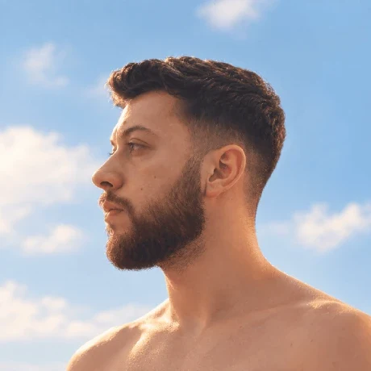

Estudante de TI em Sapucaia do Sul, RS. Do app desktop em Rust ao painel financeiro em tempo real, levo ideias até produção.

Sou estudante de TI e desenvolvedor full-stack. Construo produtos reais, de apps desktop em Rust a painéis financeiros em tempo real. Acredito que IA não substitui o dev: amplifica quem sabe usá-la.
Do campo de batalha ao deploy.
Continue rolando para avançar. Clique em uma missão para abrir o briefing com stack e links.
Começo pelo problema real: quem vai usar, o que precisa resolver e como medir se deu certo.
Uso IA para explorar ideias e validar fluxos rápido, com qualidade e velocidade juntas.
TypeScript estrito, testes e arquitetura pensada para crescer, do front ao back.
Deploy contínuo na Vercel, documentação no repositório e iteração a cada versão.
Toda missão tem uma equipe. Passe o mouse (ou deslize, no celular) para ver o codinome de cada processador.
Estou aberto a oportunidades, freelas e colaborações. Me chame no LinkedIn ou no Instagram, ou veja meu código no GitHub.
ConectarNenhum processadorfica para trás.
HANDLER ONE DESCONECTANDO · PARA-RAID 100%
Voltar ao topo ↑